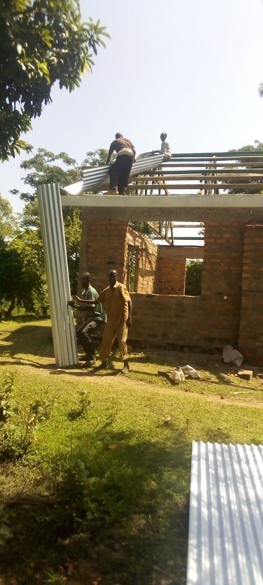

✝
Our Mission
To proclaim Christ, nurture faithful disciples and serve our community.
A Christ-centred family serving God and community.
Welcome to ACK Okoyo Church. We exist to worship God, grow disciples, care for one another and serve our community.
To proclaim Christ, nurture faithful disciples and serve our community.
A growing, united and Christ-centred church transforming lives.
Faith • Love • Integrity • Service • Unity • Compassion • Hope
The latest published service programme appears here. Church leaders can update it from the admin dashboard.
Part of the Anglican Church of Kenya and the wider Diocese of Maseno South.
A place for worship, Christian formation, prayer and service in Oluti Village.
The church continues to develop its facilities and strengthen ministry for future generations.

Use this space to showcase the groups and ministries active in the parish.
Strengthening Christian homes and relationships.
Faith, mentorship, leadership and fellowship for young people.
Helping children know and love Christ.
Prayer, evangelism and practical service to the community.
Moments from worship, ministry, building and church life.
Your giving supports worship, ministry, outreach and church development.
On M-Pesa: Lipa na M-Pesa → Pay Bill → 247247 → Account 291900. Keep your M-Pesa confirmation message as your receipt.
Have a prayer request, ministry question or church announcement? Send a message.
Oluti Village
Seme Constituency
Kisumu County, Kenya